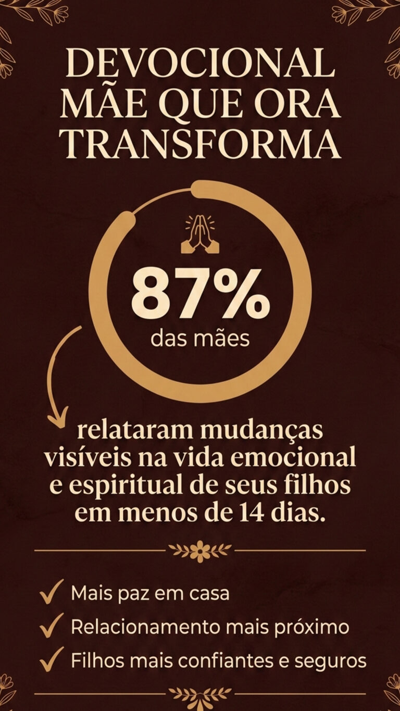
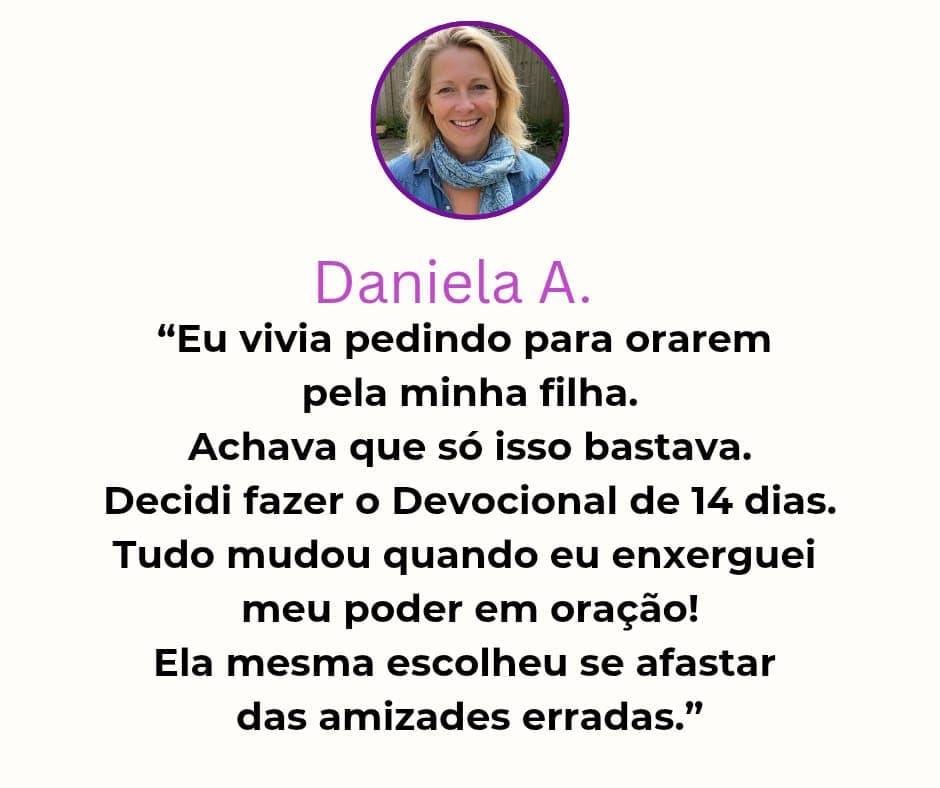

Você sente que está perdendo o seu filho(a)... para caminhos que você nunca imaginou?
Existe uma batalha silenciosa acontecendo pela mente dele(a).
Assista com atenção aos próximos minutos.
O que você pode fazer hoje está logo abaixo.
Veja mais abaixo
Deus tem um propósito lindo para a vida do seu filho(a)
Mas esse propósito precisa ser regado com oração, clamor, confiança e entrega.
Quando uma mãe ora, o céu se abre.
Não deixe para amanhã o que pode mudar a vida do seu filho(a) HOJE.
Seu filho(a) veio ao mundo para viver o extraordinário.
Permita que Deus prepare esse caminho.

Deus está no comando.
E a mãe que se posiciona debaixo dessa autoridade nunca luta sozinha.
O Que Você Está Prestes a Descobrir Pode Mudar Tudo — Se Você Se Posicionar
Existe um poder espiritual que Deus confiou somente às mães.
Um poder que nenhum psicólogo, nenhum remédio, nenhum conselho humano pode substituir.
Esse poder está na oração que só uma mãe consegue fazer.
Deus entregou à você a autoridade e a responsabilidade espiritual pela vida do seu filho(a).
Nos próximos 14 dias, você receberá um direcionamento diário de oração profunda para interceder e despertar o propósito de Deus na vida do seu filho(a).
.webp)
A responsabilidade espiritual não termina quando os filhos crescem.
Se você é avó, você é mãe duas vezes.
Deus também confiou a você a responsabilidade de interceder por seus netos.
Essa geração precisa da sua oração. Não fique de fora dessa missão.
MÃE QUE ORA TRANSFORMA
O Único Devocional de 14 Dias Criado Para Mães Que Querem Ver Seus Filhos Vivendo o Extraordinário
Não é mais um livro que você vai comprar e deixar na estante.
Não é mais uma promessa vazia.
É um caminho espiritual completo, com começo, meio e fim, que vai te guiar passo a passo em orações poderosas que já transformaram centenas de famílias.
.webp)
.webp)
.webp)
Este Devocional Foi Criado Para Você Que Tem Um Filho(a)
Fase da Infância:
- ✦ Que não dorme bem, vive agitado(a) e irritado(a)
- ✦ Que vive fases intensas da infância, exigindo cuidado e oração constante
- ✦ Que você quer cercar de proteção e direção divina desde cedo
Fase da Adolescência:
- ✦ Que está passando por fases desafiadoras que te deixam sem chão
- ✦ Que anda com más companhias ou está se afastando de casa
- ✦ Que enfrenta ansiedade, fobias, medos intensos ou tristeza constante
Fase Adulta:
- ✦ Que enfrenta prisões emocionais e espirituais
- ✦ Que passa por dificuldades financeiras ou conflitos familiares
- ✦ Que precisa de fortalecimento emocional e espiritual
Seja qual for a fase, chegou a hora de colocar seu filho(a) nos braços de Deus.
.webp)
Tenha o Controle Espiritual da Sua Casa Na Palma da Sua Mão
Esqueça materiais complicados. Você terá acesso imediato a uma Área de Membros Exclusiva, que funciona como um aplicativo no seu celular.
- 🎧
Ouça Onde Estiver
No carro, lavando louça ou antes de dormir. Basta dar o play e deixar a oração guiar seu coração.
- 📖
Leia e Medite
Acesse os materiais em PDF com alta qualidade para leitura profunda e reflexão bíblica.
- 👥
Acesso à Comunidade Mãe que Ora, Transforma!
Caminhe junto com outras mães que, assim como você, estão lutando pela vida dos seus filhos.
O Que Você Vai Receber Durante os 14 Dias:
Orações Diárias
Em áudio (para você ouvir onde estiver) e em formato digital (para ler e meditar).
Versículos Diários
Palavra de Deus direcionada para cada dia de oração e reflexão.
Blindagem Materna
Fortaleça espiritualmente seu filho(a) e sua casa contra inimigos.
Comunidade de Apoio
Outras mães que relatam batalhas vencidas. Você não estará sozinha.
BÔNUS EXCLUSIVOS
(Áudios Guiados de Oração)
BÔNUS 1 – Oração pela Força Emocional da Mãe
Porque você também precisa estar forte
- Renovação das forças
- •Equilíbrio emocional
- •Paz interior
BÔNUS 2 – Oração pelo Filho(a) Enquanto Dorme
O momento mais poderoso para interceder
- Proteção noturna
- •Libertação de pesadelos
- •Sono reparador
BÔNUS 3 – Oração para Vencer Batalhas Espirituais
Quebre cadeias e prisões invisíveis
- Autoridade espiritual
- •Corte de laços
- •Proteção divina
BÔNUS 4 – Consagração Materna para 2026
Prepare seu filho(a) para viver o extraordinário
- Entrega do futuro
- •Bênção profética
- •Alinhamento com o céu
BÔNUS 5 – Oração para Fazer Junto com os Filhos
Ensine-os o poder da oração desde cedo
- União familiar
- •Legado de fé
- •Intimidade com Deus
PERGUNTAS FREQUENTES
Tire suas dúvidas antes de começar sua jornada de oração
TRANSFORMAÇÕES REAIS DE MÃES COMO VOCÊ
CLIQUE NAS FOTOS PARA AMPLIAR



* Resultados reais compartilhados em nossa comunidade exclusiva.
QUANTO VALE A PAZ DA SUA FAMÍLIA?
Quantas noites sem paz a preocupação já te custou?
Quanto você já gastou tentando resolver sozinha?
Quanto vale ver seu filho(a) livre, feliz e vivendo o propósito de Deus?
De R$ 197,00 por apenas
12x R$ 6,93
ou R$ 67,00 à vista

Você tem 7 dias de garantia incondicional.
Se não amar, devolvemos 100% do seu dinheiro.
"Seja o exemplo que seu filho(a) vai seguir. Dê esse passo de fé agora."